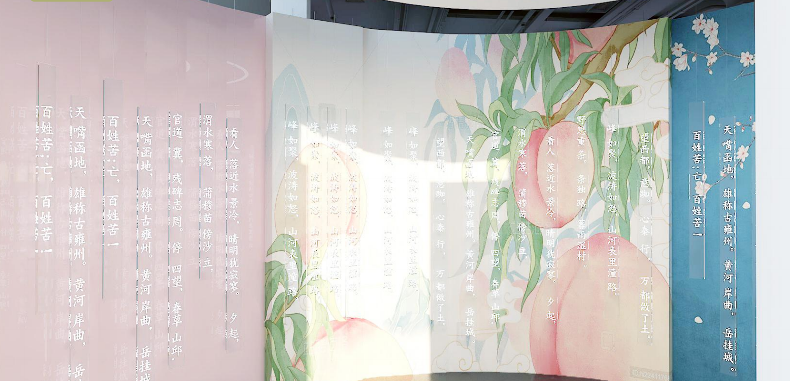
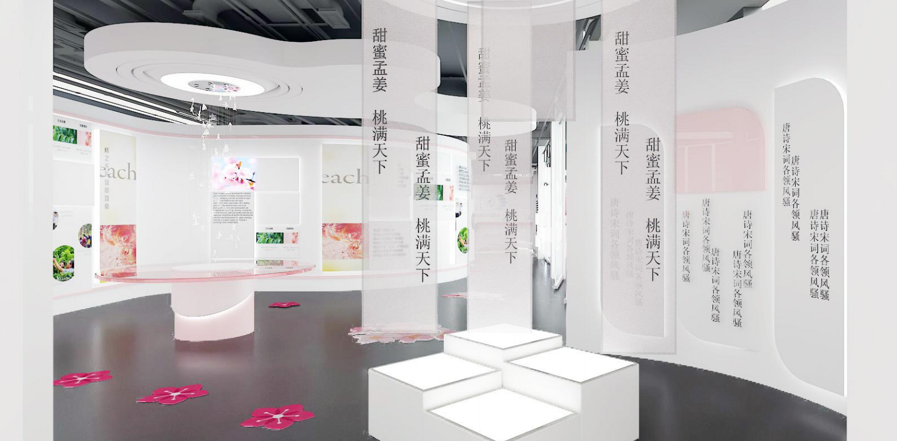
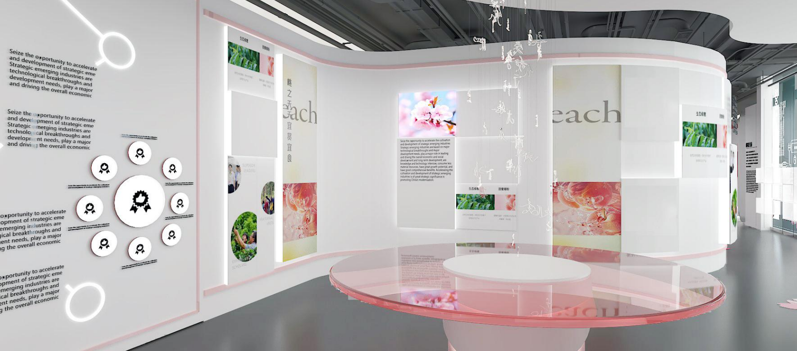
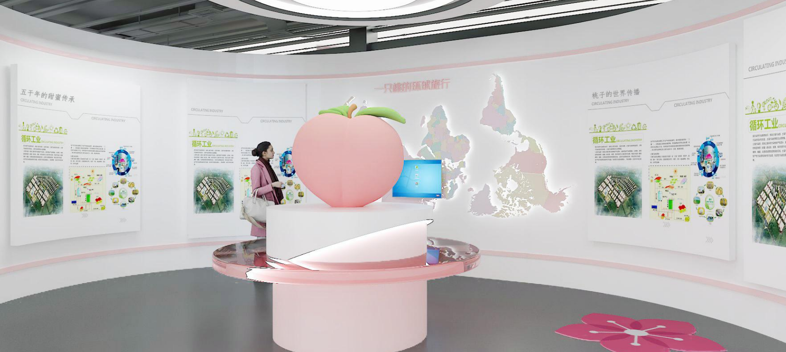
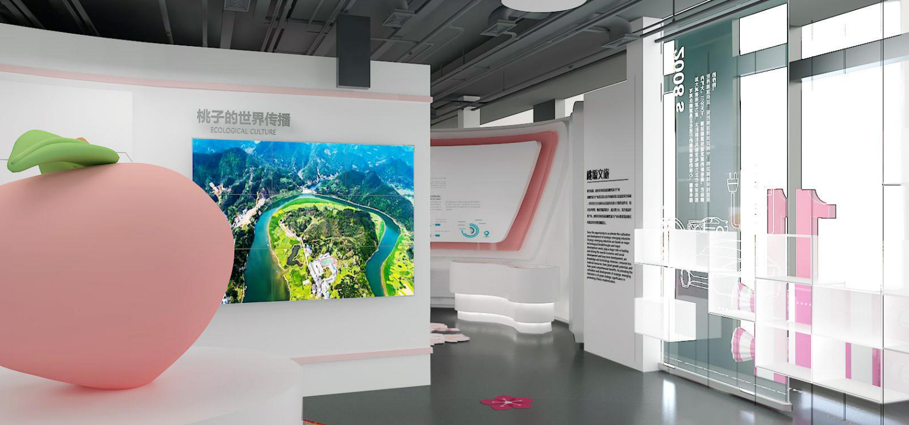

项目背景
铜川黄堡地区是孟姜女传说的核心发源地之一，当地政府希望以桃文化为切口打造文旅体验空间，既能承载在地文化传播功能，又能成为吸引游客的打卡目的地。政府的诉求很朴素：钱花得值，老百姓看得懂，外面的人愿意来。
我的角色
这个项目最大的难点不是技术，而是如何在政府有限的预算内做出有质感的体验。我带着团队跑了三趟黄堡，跟当地文化学者和老乡聊，把桃文化的历史脉络、民间故事、节气习俗一一挖出来，整理成可展示的内容脚本。在空间设计上，我坚持一个原则：少做纯文字展板，多做能互动、能拍照的东西。把预算大头花在了桃文化沉浸式投影和互动装置上，墙面展板则用成本更低但质感不差的材料替代。最终在预算范围内呈现出了超出政府预期的效果。





